Template Masterfile - Working Instructions
Table of Contents
-
System Overview
-
Manage Subjects Instructions
-
Manage Advisory Classes Instructions
-
Generate OGS Template Instructions
-
Managing Your Data
-
Troubleshooting Guide
1. System Overview
1.1 What is the Template Masterfile?
The Template Masterfile is a tool built into Google Sheets that helps
you organize and create grade sheets for your school. Think of it as a
central hub where you can:
- Assign which teachers teach which subjects to which classes
- Assign which teachers are advisers for which classes
- Create official grade sheet templates automatically
The system does all the heavy work for you - you just need to fill in
the information through simple forms.
1.2 Quick Start Guide
To assign subjects to teachers:
-
Open your spreadsheet → Click Manage at the top →
Choose Manage Subjects
- Pick the grade level, section, and teacher's name
-
Check the boxes next to the subjects and click
Add Subject
To assign advisory classes:
-
Open your spreadsheet → Click Manage at the top →
Choose Manage Advisory Classes
- Pick the teacher, grade level, and section
- Click Add Advisory
To create a grade sheet template:
-
Open your spreadsheet → Click Export OGS at the top →
Choose Export OGS
-
Type in the school year, then pick the grade level, section, and
teacher
-
Check that the subjects are correct and click
Generate Template
2. Manage Subjects Instructions
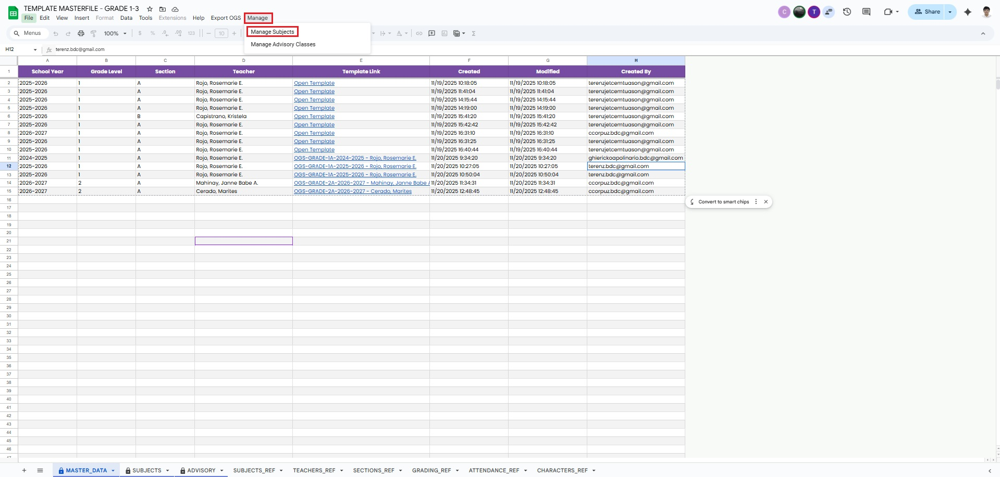
-
Open the Google Sheets file for your school's Template Masterfile
-
Look at the top of the screen and click on Manage
-
Click Manage Subjects from the list that appears
- A pop-up window will appear with the form
2.2 Assigning Subjects to Teachers
Step 1: Choose the Grade Level
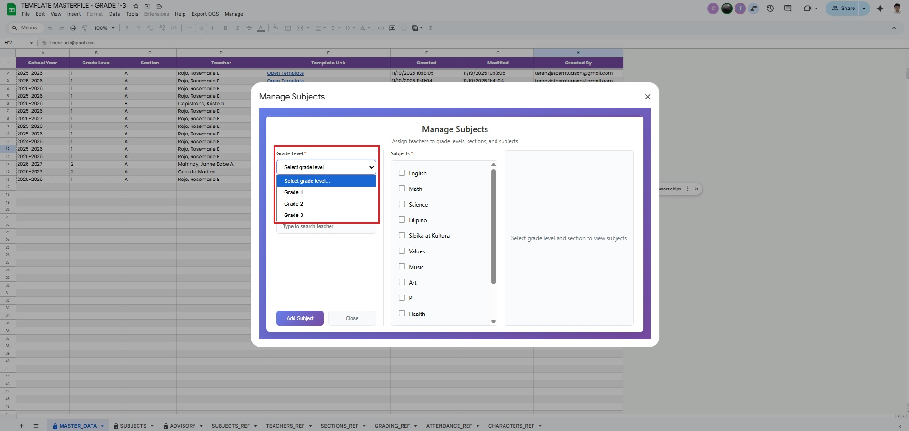
- Click on the box labeled Grade Level
-
A list will drop down - click on the grade level you want (like Grade
7, etc.)
Step 2: Choose the Section
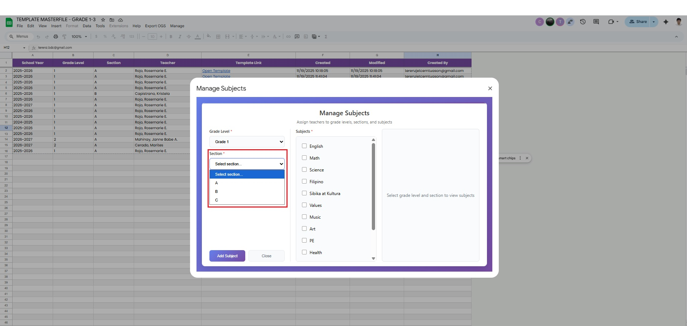
-
After you pick a grade level, the Section box will
now show options
-
Click on it and choose the section (like Section A, Section B, etc.)
Step 3: Choose the Teacher
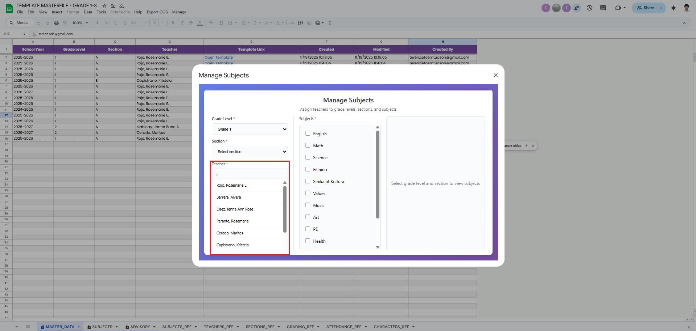
- Click in the box labeled Teacher
- Start typing the teacher's name
-
As you type, matching names will appear below - click on the correct
name
-
You can also use the up and down arrow keys on your keyboard to scroll
through the names, then press Enter to select
Note: You'll only see teachers who are marked as
"active" in your teacher list.
Step 4: Choose the Subjects
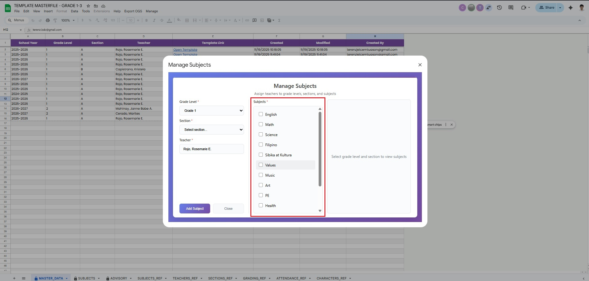
- You'll see a list of subjects with empty boxes next to them
-
Click the boxes next to each subject you want to assign to this
teacher
- You can select as many subjects as you need
Remember: All the subjects in this list are the ones
marked as "active" in your SUBJECTS_REF sheets. The subjects you check
will be assigned to the teacher for this specific grade level and
section.
Step 5: Save the Assignment
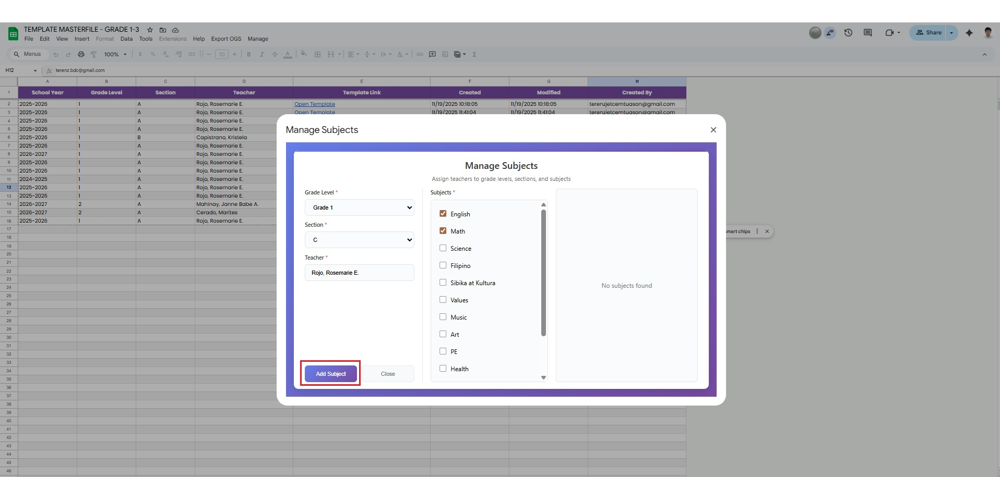
-
When you're ready, click the blue Add Subject button
at the bottom
-
The button will change to say Adding... while the
system works
-
If you selected multiple subjects, it will say
Adding X assignment(s)... (where X is the number of
subjects)
-
Wait for a message that says "Success!" or confirms the assignment was
added
Step 6: What Happens Next
After the assignment is saved:
-
The subjects you selected are now assigned to that teacher for that
grade level and section
- The list of subjects will refresh to show the new assignments
-
The form will clear out so you can add more assignments if needed
2.3 Viewing Subject Assignments
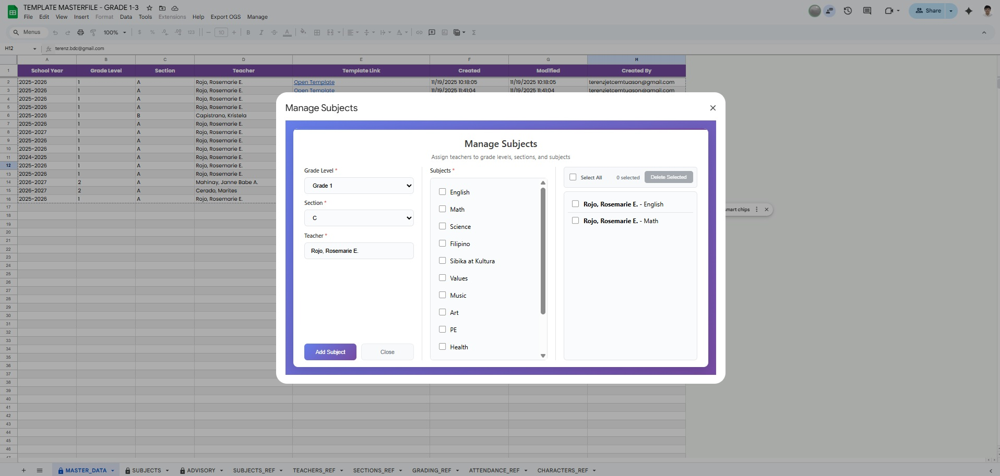
How to See Existing Assignments
-
Click on the Grade Level box and choose a grade level
- Click on the Section box and choose a section
-
The list below will automatically show all the subjects that are
currently assigned for that grade level and section
- Each line shows: The teacher's name and the subject they teach
Understanding What You See
-
You'll only see assignments that are currently active (not
archived/deleted ones)
- Each line = one teacher teaching one subject
-
The list updates automatically every time you change the grade level
or section
2.4 Removing Subject Assignments
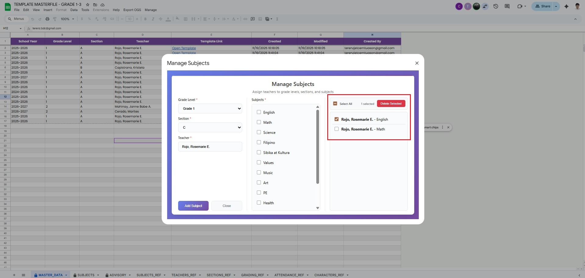
Step 1: Choose What to Remove
- Look at the list of subject assignments
- Click the box next to each assignment you want to remove
- You can select as many as you need
-
There's a Select All option if you want to remove
everything shown
-
As you click boxes, the count at the top will update to show how many
you've selected
Step 2: Delete the Assignments
- Click the red Delete Selected button
- A message will pop up asking "Are you sure?" - click to confirm
-
The button will change to say Deleting X... (where X
is how many you're deleting)
- Wait for a message confirming the deletion
Step 3: What Happens Next
After deletion:
- The assignments you selected will be removed from view
- The list will refresh to show what's left
-
Don't worry - the assignments aren't completely erased, they're just
archived (hidden)
2.5 Error Messages and Solutions
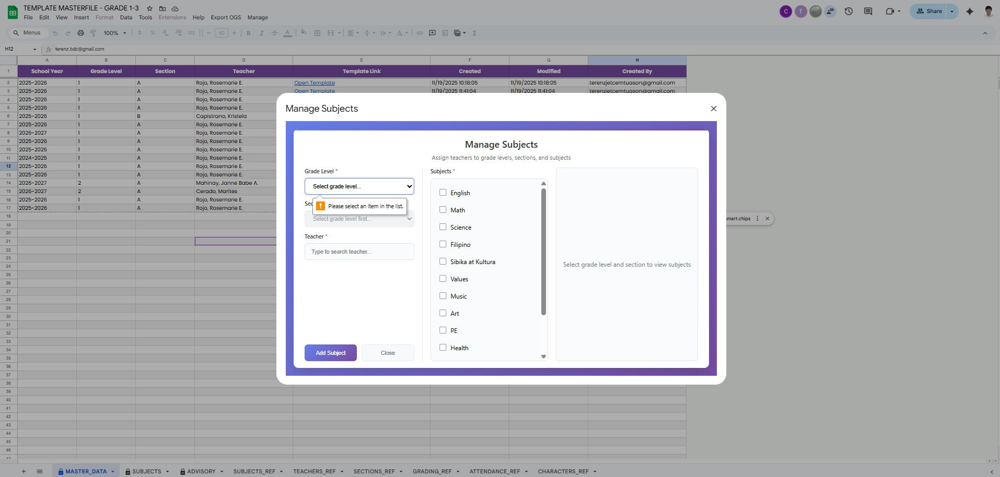
What this means: You tried to click
Add Subject but didn't fill in everything needed.
How to fix it:
- Make sure you've selected a grade level
- Make sure you've selected a section
- Make sure you've typed in a teacher's name
- Make sure you've checked at least one subject box
- Then try clicking Add Subject again
Subject Already Assigned to Someone Else
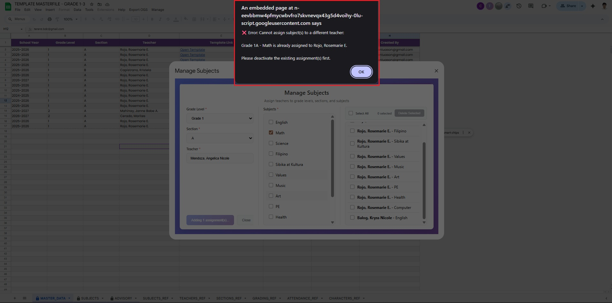
What this means: You're trying to assign a subject to a
teacher, but that subject is already assigned to a different teacher for
the same grade level and section.
Why this happens: The system doesn't allow two teachers
to teach the same subject to the same class.
How to fix it:
-
First, remove the existing assignment (the message will tell you which
one)
- Then come back and add the new assignment
-
Or, if you made a mistake, just assign a different subject instead
Forgot to Check Any Subjects
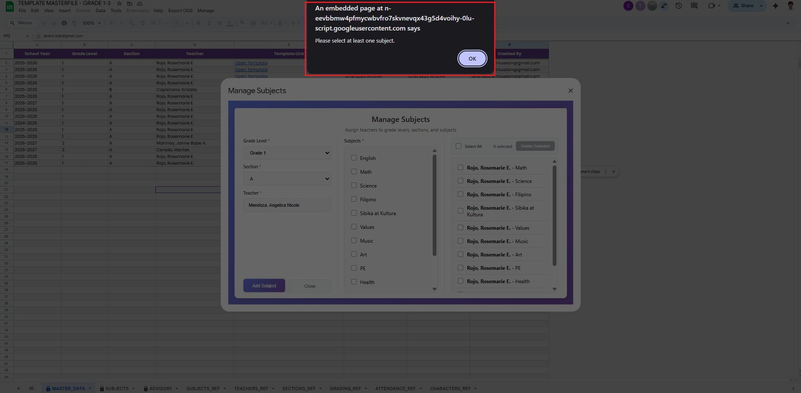
What this means: You clicked
Add Subject but forgot to check any subject boxes.
How to fix it:
- Scroll through the subjects list
- Click the boxes next to the subjects you want to assign
- You must check at least one box
- Then click Add Subject again
Can't Delete Anything
What this means: The
Delete Selected button is grayed out and you can't
click it.
Why this happens: There are no assignments to delete
for the grade level and section you're viewing.
How to fix it:
- Make sure you've selected the correct grade level and section
- Check if there are actually any assignments showing in the list
-
Make sure you've checked at least one box next to an assignment before
trying to delete
3. Manage Advisory Classes Instructions
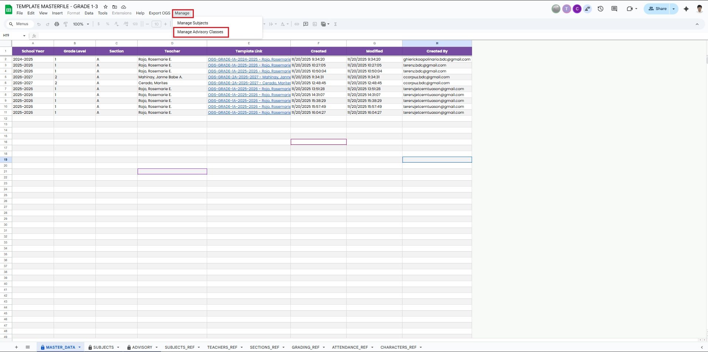
- Open the Google Sheets file for your Template Masterfile
- At the top of the screen, click on Manage
- Click Manage Advisory Classes from the list
- A pop-up window will appear with the form
3.2 Assigning Advisory Classes to Teachers
Step 1: Choose the Teacher
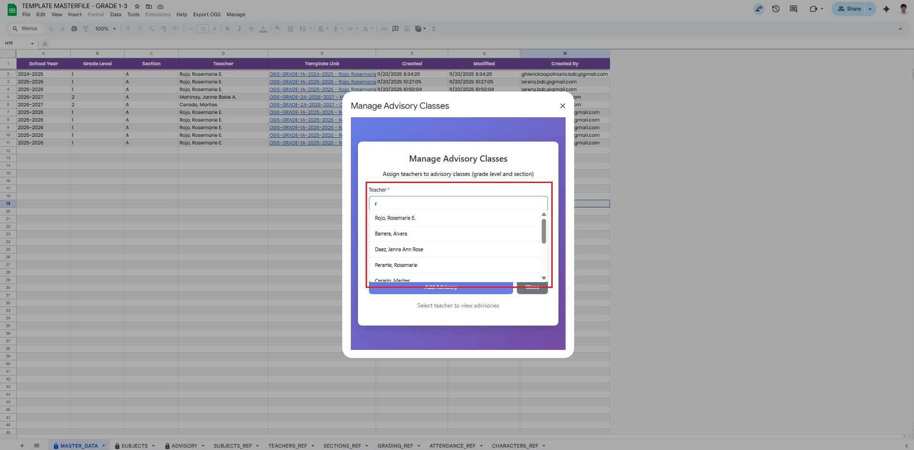
- Click in the Teacher box
- Start typing the teacher's name
- Matching names will appear below - click on the correct one
-
Or use your arrow keys to scroll through the names and press Enter
Note: Only active teachers will appear in this list.
Step 2: Choose the Grade Level
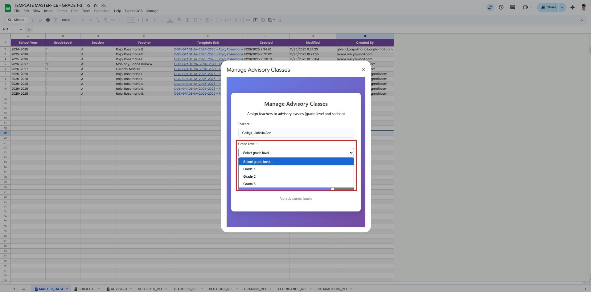
- Click on the Grade Level box
-
A list will drop down - click on the grade level (like Grade 1, etc.)
- After you select this, the Section box will become available
Step 3: Choose the Section
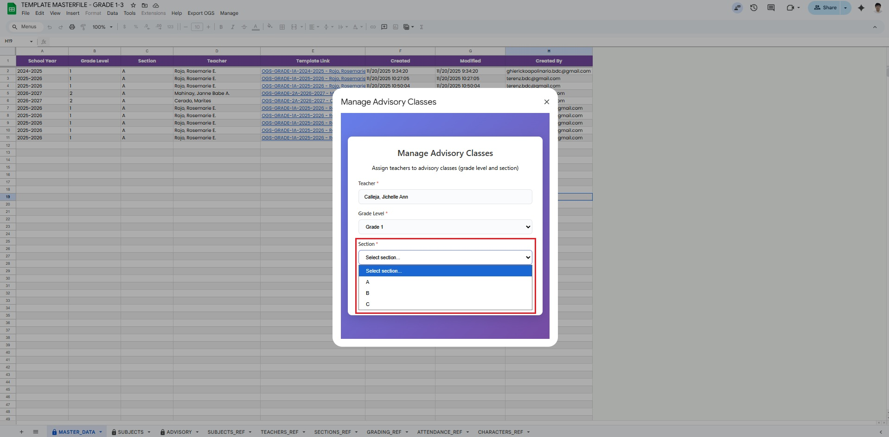
-
Click on the Section box (it should now be clickable)
- Choose the section (like Section A, Section B, etc.)
-
After you select this, the list below will show if this teacher
already has any advisory classes
Step 4: Save the Advisory Assignment
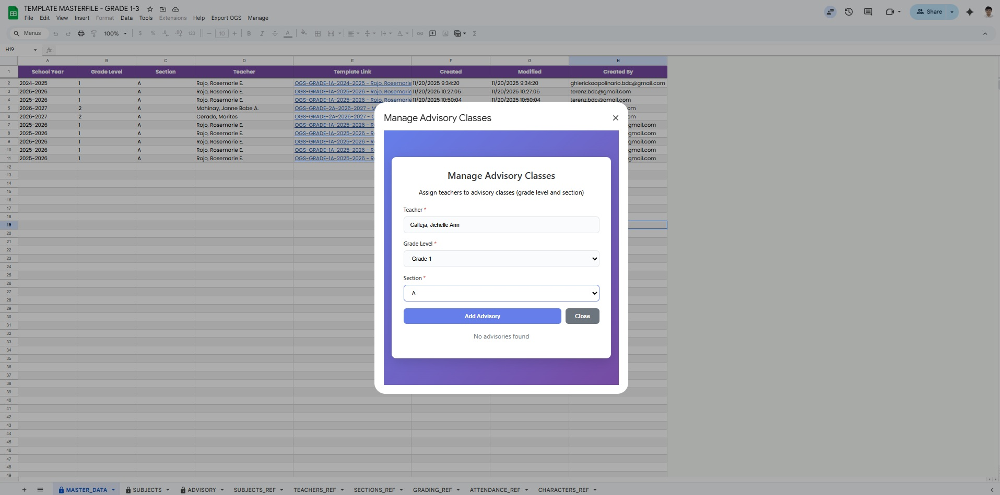
- Click the blue Add Advisory button
-
The button will change to say Adding... while the
system works
- Wait for a confirmation message
Step 5: What Happens Next
After saving:
-
The teacher is now assigned as the adviser for that grade level and
section
- The list of advisories will refresh to show the new assignment
- The form will clear so you can add more if needed
3.3 Viewing Advisory Assignments
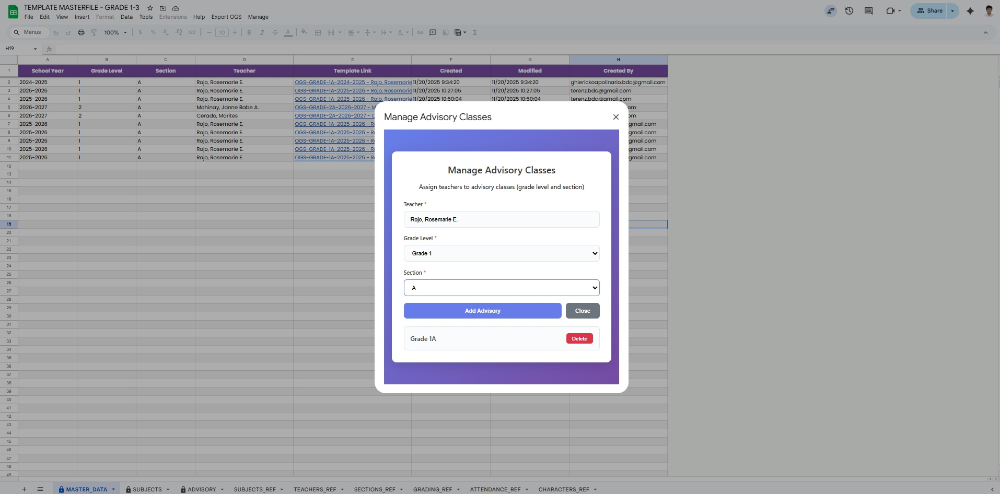
How to See What a Teacher Advises
-
Click in the Teacher box and type or select a
teacher's name
-
The list below will automatically show all the advisory classes for
that teacher
-
Each line shows the grade level and section (like "Grade 1A" or "Grade
7B")
Understanding What You See
- You'll only see advisory assignments that are currently active
-
Each line = one grade level and section that this teacher advises
- The list updates automatically when you change the teacher
3.4 Removing Advisory Assignments
Step 1: Choose What to Remove
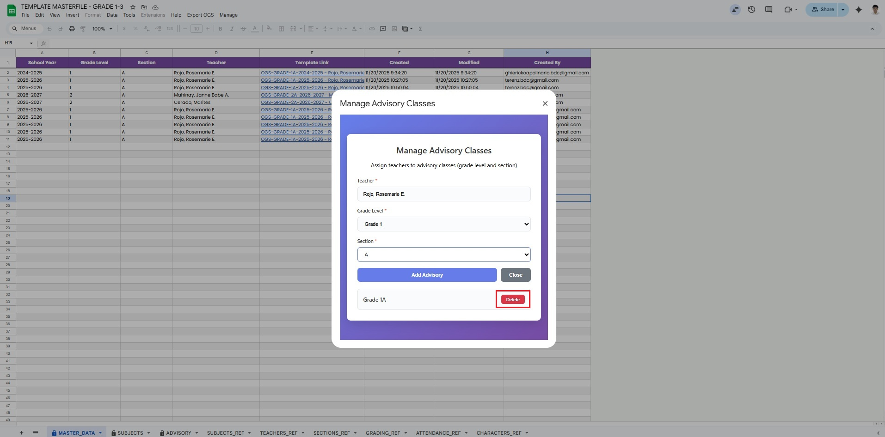
- First, select a teacher to see their advisory assignments
- Click the box next to each advisory you want to remove
- You can select multiple advisories
-
Use Select All if you want to remove all of them
- The count will update to show how many you've selected
Step 2: Delete the Advisories
- Click the red Delete Selected button
- A confirmation message will appear - click to confirm
-
The button will change to say Deleting... while it
works
- Wait for a success message
Step 3: What Happens Next
After deletion:
- The advisories you selected will be removed from view
- The list will refresh automatically
- The advisories are archived, not permanently deleted
3.5 Error Messages and Solutions
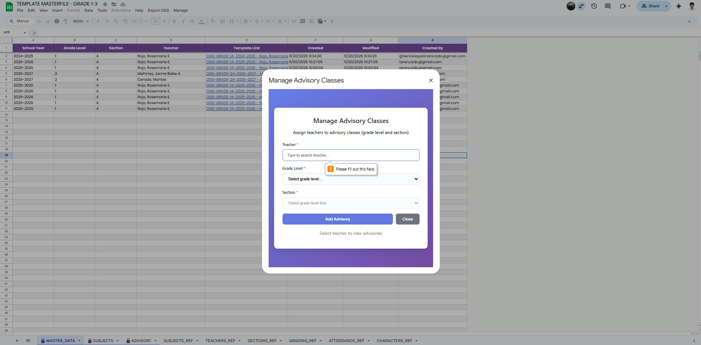
What this means: You clicked
Add Advisory but didn't fill in all the required
information.
How to fix it:
- Make sure you've selected a teacher
- Make sure you've selected a grade level
- Make sure you've selected a section
- All three must be filled in before you can save
This Section Already Has an Adviser
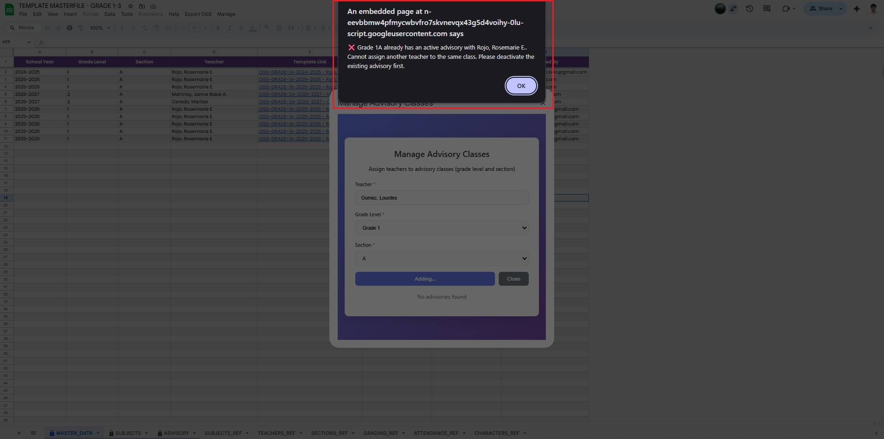
What this means: You're trying to assign a teacher as
adviser, but that grade level and section already has a different
teacher assigned as adviser.
Why this happens: Each class can only have one adviser.
How to fix it:
- First, remove the existing advisory assignment
- Then come back and add the new one
- Or check if you selected the wrong section by mistake
No Advisories to Remove
What this means: There are no advisory assignments to
delete.
Why this happens: The teacher you selected doesn't have
any active advisory assignments.
What to do:
- Check if you selected the correct teacher
-
If this teacher shouldn't have any advisories, then everything is
correct
-
You won't be able to delete anything if there's nothing to delete
4. Generate OGS Template Instructions
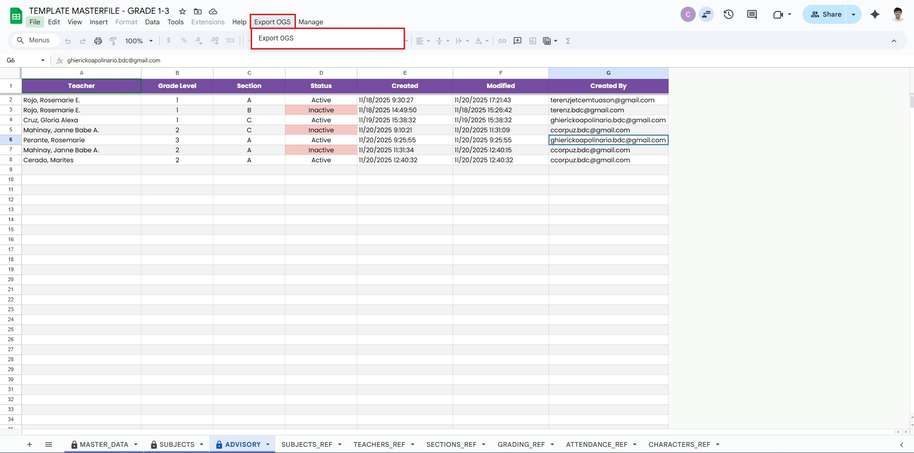
- Open the Google Sheets file for your Template Masterfile
- At the top of the screen, click on Export OGS
- Click Export OGS from the list
- A pop-up window will appear with the form
4.2 Creating an OGS Template
Step 1: Type the School Year
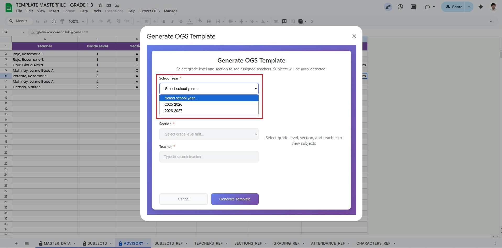
- Click in the School Year box
- Type the school year using this format: "YYYY-YYYY"
- For example, type "2024-2025" for school year 2024-2025
- Make sure to include the hyphen (-) between the years
Important: This field is required - you must fill it
in.
Step 2: Choose the Grade Level
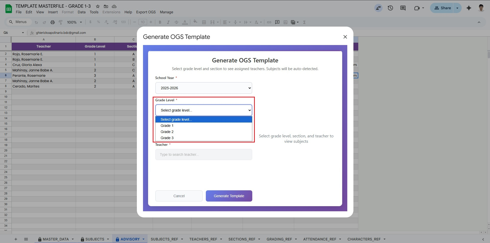
- Click on the Grade Level box
- Select the grade level (like Grade 1, Grade 7, Grade 11, etc.)
- After you select this, the Section box will become available
-
The Teacher box will stay grayed out until you also select a section
Step 3: Choose the Section
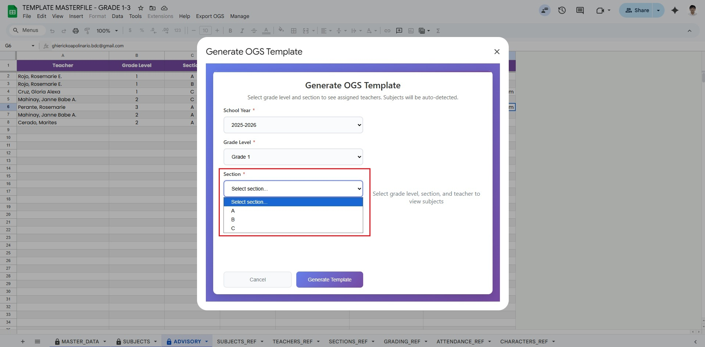
-
Click on the Section box (it should now be clickable)
- Select the section (like A, B, C, etc.)
-
The list only shows sections that belong to your selected grade level
- After you select this, the Teacher box will become available
Step 4: Choose the Teacher
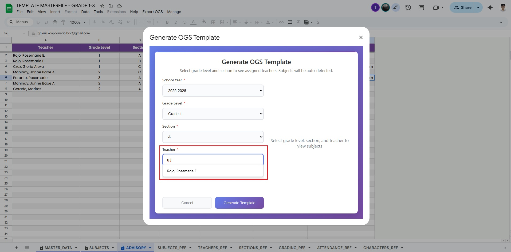
- Click in the Teacher box
- Start typing the teacher's name
-
You'll see matching names appear - these are teachers who teach the
grade level and section you selected
- Click on the correct name or use arrow keys and press Enter
Note: You'll only see teachers who have subjects
assigned to them for this specific grade level and section.
Step 5: Review the Subjects
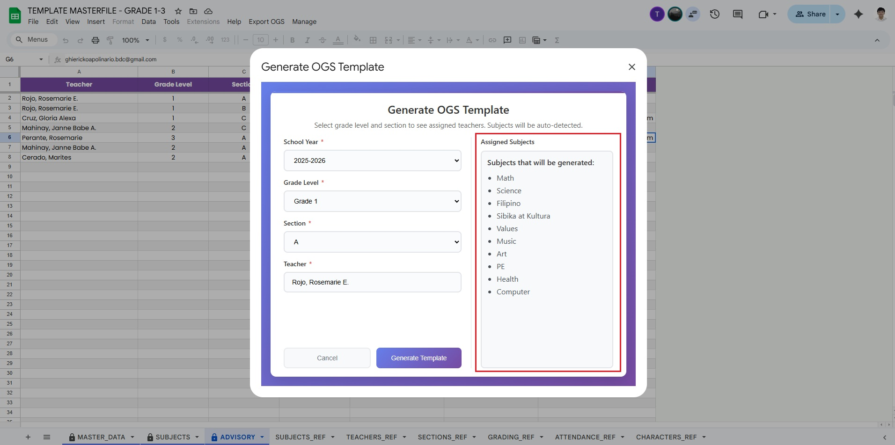
-
After you select a teacher, a section called
Assigned Subjects will appear
-
This shows all the subjects that teacher teaches for this grade level
and section
-
Check this list carefully to make sure all the expected subjects are
there
-
If a subject is missing, you'll need to go back and assign it first
using the Manage Subjects form
Step 6: Create the Template
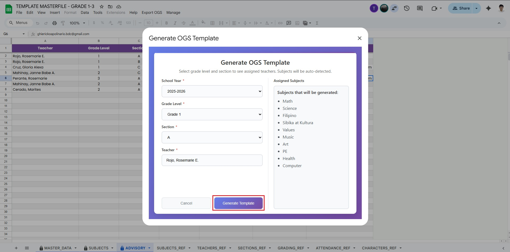
-
When everything looks correct, click the green
Generate Template button
-
The button will change to say Generating... while the
system works
- This might take a few moments - please wait
- A success message will appear with a link to your new template
- The template file is automatically saved to your Google Drive
Step 7: What Happens Next
After the template is created:
- Your template is saved in Google Drive
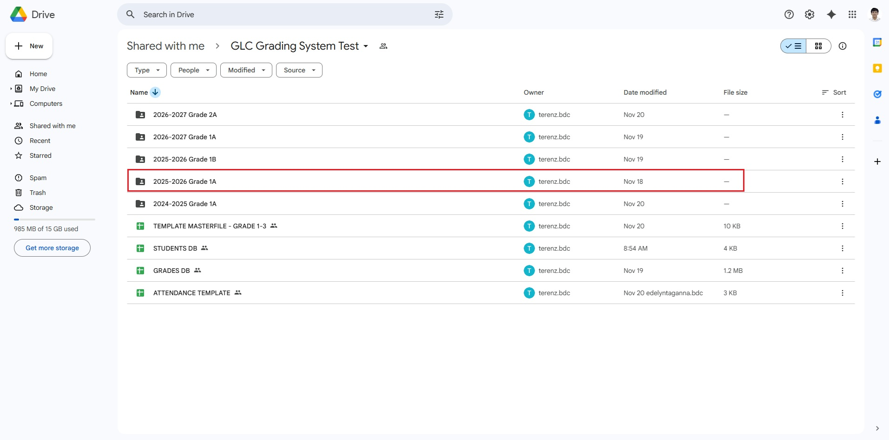
- A record is added to a special sheet called MASTER_DATA sheet
-
This record includes a link you can click to open the template anytime
-
The template includes separate sheets for each subject the teacher
teaches
4.3 Error Messages and Solutions
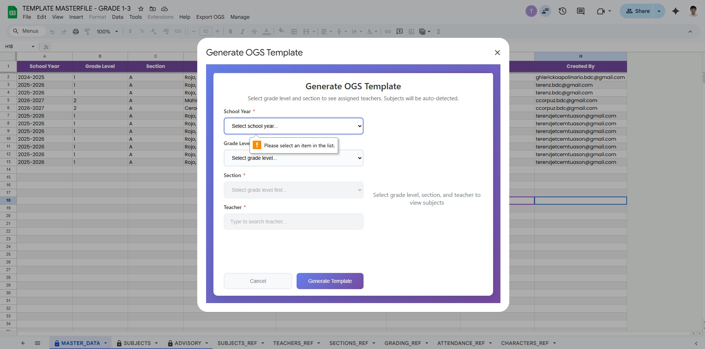
What this means: You clicked
Generate Template but didn't fill in all the required
information.
How to fix it:
- Make sure you typed in the school year
- Make sure you selected a grade level
- Make sure you selected a section
- Make sure you selected a teacher
- All four must be filled in before you can generate a template
Template Already Exists
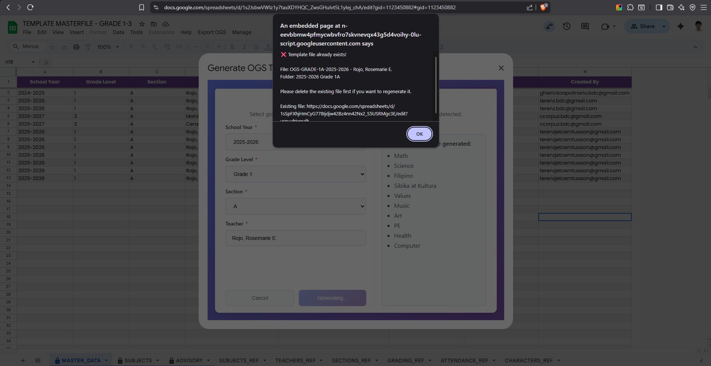
What this means: A template file has already been
created with this exact same combination of school year, grade level,
section, and teacher.
Why this matters: The system won't create duplicate
templates to avoid confusion.
What to do:
-
The error message will show you a link to the existing template -
click it to open that template
-
If you want to create a new one anyway, you'll need to delete the old
template file first from Google Drive
- Or, you can just use and edit the existing template instead
No Teacher Available
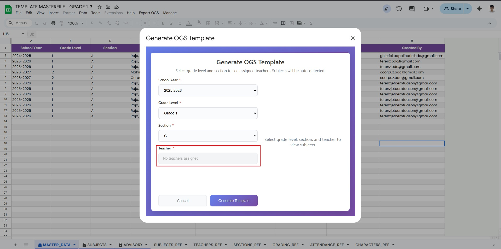
What this means: There are no teachers assigned to
teach any subjects for the grade level and section you selected.
Why this happens: The system can't create a template if
there's no teacher assigned.
How to fix it:
- Go back to the Manage Subjects form first
-
Assign at least one subject to a teacher for this grade level and
section
- Then come back to this form and try again
-
The Teacher box will remain grayed out until you make those
assignments
5. Managing Your Data
5.1 Reference Shee
The system uses several sheets in your spreadsheet where you can add or
update information directly. Think of these as your master lists.
SUBJECTS_REF Sheet
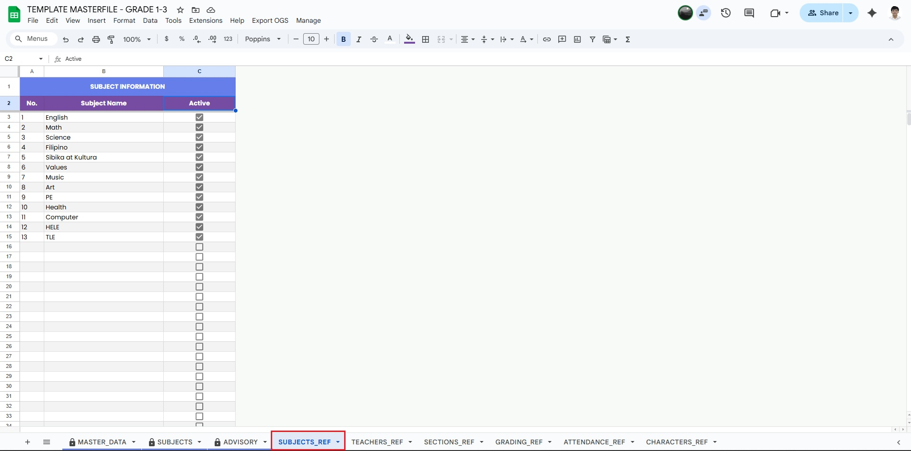
What it's for: This sheet contains all the subjects
available in your school.
How to use it:
-
To add a new subject, simply add a new row with the subject name
-
In the "Active" column, put a checkmark (✓) to make the subject
available in the forms
-
Remove the checkmark to hide a subject (when you don't need it anymore
but want to keep the record)
-
Only subjects marked as active will show up when you're assigning
teachers to subjects
TEACHERS_REF Sheet
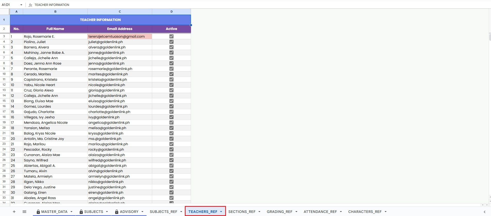
What it's for: This sheet contains all the teachers in
your school.
How to use it:
- To add a new teacher, add a new row with the teacher's name
-
In the "Active" column, put a checkmark (✓) to make the teacher
available in the forms
-
Remove the checkmark for teachers who are no longer active (like those
who left) but you want to keep their records
- Only active teachers will appear in the forms
SECTIONS_REF Sheet
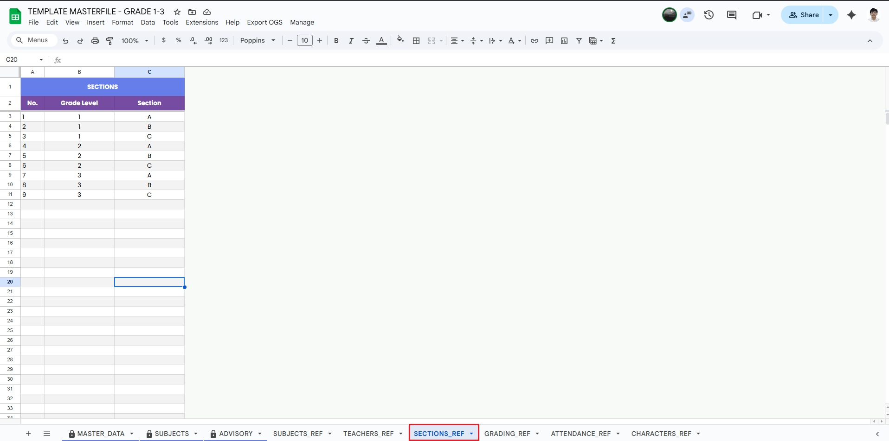
What it's for: This sheet lists all grade levels and
sections in your school.
How to use it:
-
To add a new section, add a new row with the grade level and section
name
-
The "Level" column (Elementary/JHS/SHS) is filled in automatically
based on the grade level
-
When you're filling out forms, sections are filtered to match the
grade level you select
GRADING_REF Sheet
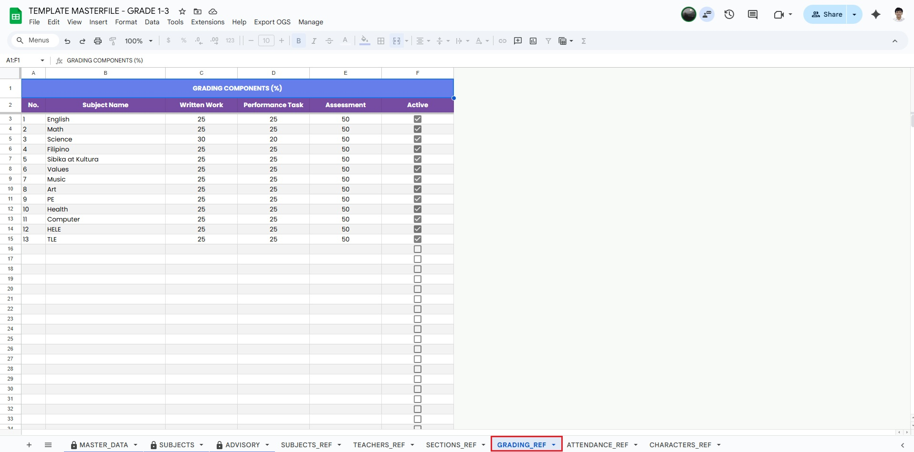
What it's for: This sheet controls how grades are
calculated for each subject.
How to use it:
-
Each row sets the percentages for Written Work, Performance Task, and
Assessment
-
If a subject has its own row, those percentages will be used for that
subject
-
The "DEFAULT" row is used for subjects that don't have their own
specific row
- Only rows marked as active are used
- Make sure the three percentages add up to 100%
Important: Don't delete the DEFAULT row - the system
needs it as a backup.
ATTENDANCE_REF Sheet
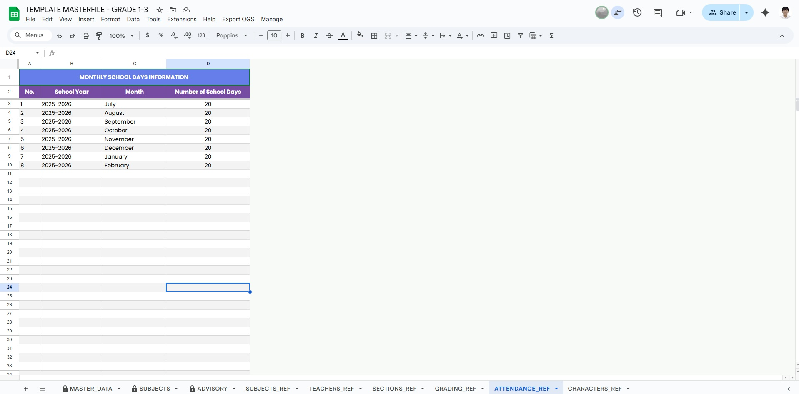
What it's for: This sheet contains the standardized
number of school days per month and per school year.
How to use it:
- This sheet typically doesn't need to be edited frequently
- Only update if your school calendar changes
CHARACTERS_REF Sheet
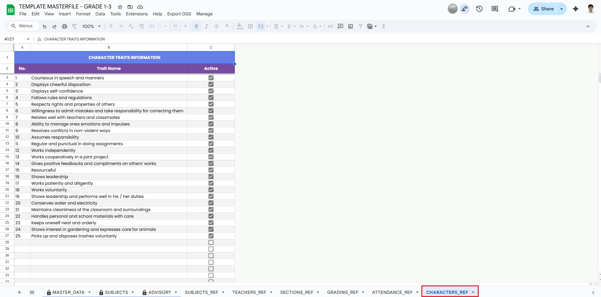
What it's for: This sheet lists character traits used
for grading student character and behavior.
How to use it:
- Add character traits as needed
- Mark rows as active or inactive using the Active column
- Only active rows are used in the system
5.2 System Sheets (Do Not Edit These)
These sheets are managed automatically by the system. It's best not to
edit them directly because the system uses them to keep track of
everything.
MASTER_DATA Sheet
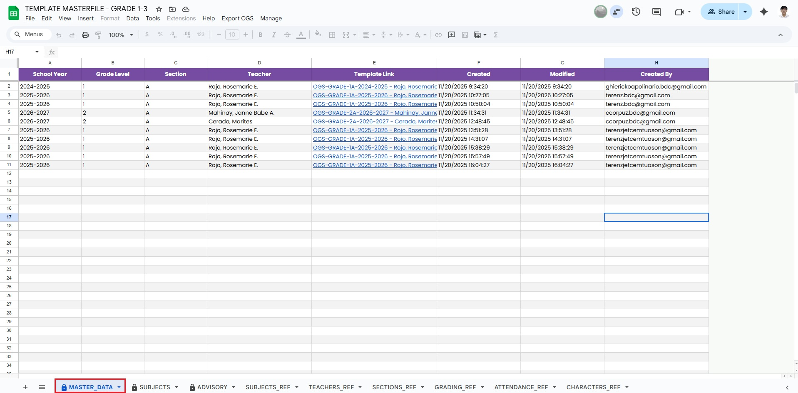
What it's for: This sheet keeps a record of every
template file you've created.
What it contains:
- School Year
- Grade Level
- Section
- Teacher name
- A link to the template file (click to open it)
- When it was created and last modified
- Who created it
How to use it: Just use the links to find and open your
template files. Don't edit the data directly.
SUBJECTS Sheet
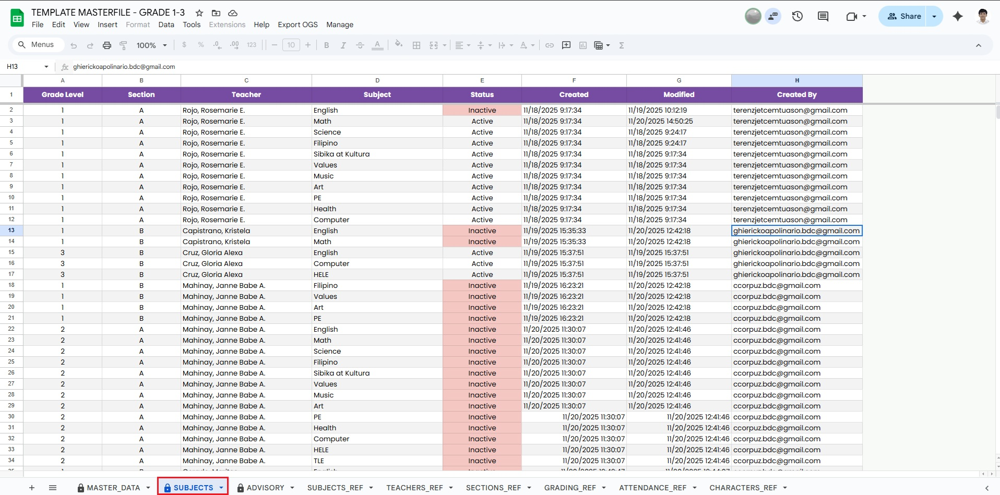
What it's for: This sheet stores all the subject
assignments (which teacher teaches what to which class).
What it contains:
-
Every subject assignment you've made through the Manage Subjects form
- Status showing if it's Active or Archived
- Tracking information about when and who made changes
How to use it: Let the Manage Subjects form handle all
updates. Don't edit this sheet directly.
ADVISORY Sheet
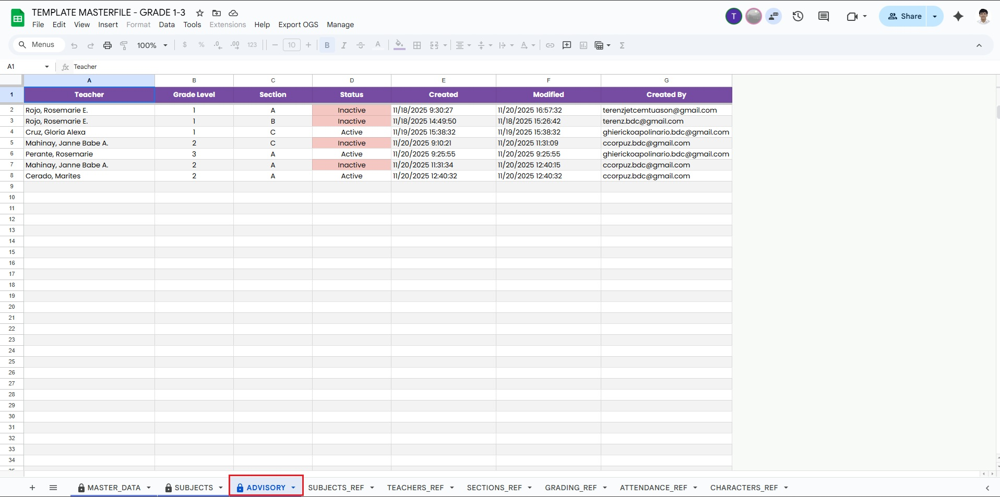
What it's for: This sheet stores all the advisory class
assignments (which teacher advises which class).
What it contains:
-
Every advisory assignment you've made through the Manage Advisory
Classes form
- Status showing if it's Active or Archived
- Tracking information about when and who made changes
How to use it: Let the Manage Advisory Classes form
handle all updates. Don't edit this sheet directly.
5.3 Where Your Templates are Saved
File Organization
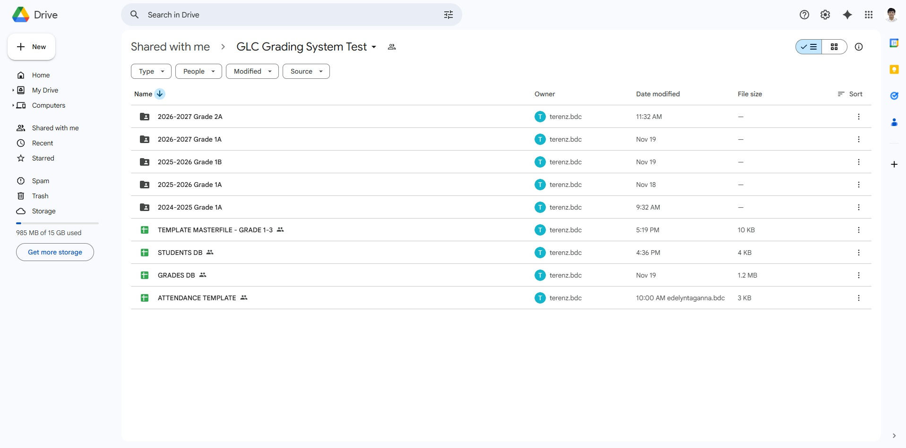
Where to find your templates:
- All templates are automatically saved to your Google Drive
-
Each template file has a specific name that includes the school year,
grade level, section, and teacher
-
Each template file contains multiple sheets inside - one sheet for
each subject
How to access templates:
- Click the links in the MASTER_DATA sheet, or
- Go to your Google Drive and search for the file name
-
You can also find the link in the success message when you first
create the template
6. Troubleshooting Guide
Problem: When you click on a menu item, the form
doesn't appear or you see an error message.
Try these solutions:
-
Check your internet: Make sure you're connected to
the internet
-
Refresh the page: Press F5 on your keyboard or click
the refresh button in your browser
-
Close and reopen: Close the form if it's partially
open, then try opening it again from the menu
-
Check permissions: Make sure you have permission to
edit the spreadsheet (ask your administrator if you're not sure)
-
Contact support: If none of these work, contact your
systems developer
6.2 Template Won't Create
Problem: You clicked Generate Template but it didn't
work or showed an error.
Try these solutions:
-
Check subject assignments: Make sure the teacher has
subjects assigned for the selected grade level and section (use Manage
Subjects to check)
-
Check teacher status: Go to the TEACHERS_REF sheet
and make sure the teacher has a checkmark (✓) in the Active column
-
Check grading weights: Go to the GRADING_REF sheet
and make sure there's a DEFAULT row that's marked as active
-
Check all fields: Make sure you filled in school
year, grade level, section, and teacher
-
Check Google Drive: Make sure you have permission to
create files in Google Drive
-
Contact support: If it still doesn't work, contact
your systems developer
6.3 Can't Assign Subjects
Problem: You're trying to assign a subject but it won't
let you, or you see an error message.
Try these solutions:
-
Check if subject is active: Go to the SUBJECTS_REF
sheet and make sure the subject has a checkmark (✓) in the Active
column
-
Check for conflicts: The error message will tell you
if the subject is already assigned to a different teacher for the same
grade level and section - you need to remove that assignment first
-
Check teacher status: Go to the TEACHERS_REF sheet
and make sure the teacher has a checkmark (✓) in the Active column
-
Check selections: Make sure you've selected a grade
level, section, teacher, and at least one subject
6.4 Can't Assign Advisory Classes
Problem: You're trying to assign an advisory but it
won't let you, or you see an error message.
Try these solutions:
-
Check for existing adviser: The error will tell you
if that grade level and section already has a different teacher as
adviser - you need to remove that assignment first
-
Check teacher status: Go to the TEACHERS_REF sheet
and make sure the teacher has a checkmark (✓) in the Active column
-
Check selections: Make sure you've selected a
teacher, grade level, and section
6.5 Dropdown Lists are Empty
Problem: When you click on a dropdown (like Grade Level
or Section), nothing appears, or the list is empty.
Try these solutions:
-
Check reference sheets: Make sure the SUBJECTS_REF,
TEACHERS_REF, and SECTIONS_REF sheets have data in them
-
Check active status: Make sure the items in those
sheets have checkmarks (✓) in their Active column
-
Check sheet structure: Make sure these sheets have 2
header rows at the top (the system expects this)
-
Refresh the form: Close the form and open it again
-
Check spelling: Sheet names must be spelled exactly
right (including capital letters)
6.6 Teacher Names Don't Appear
Problem: When you type in the Teacher box, no
suggestions appear, or the wrong teachers appear.
Try these solutions:
-
Check TEACHERS_REF: Go to the TEACHERS_REF sheet and
make sure the teacher exists and has a checkmark (✓) in the Active
column
-
Select grade/section first: In the Generate OGS form,
you must select a grade level and section before teacher names will
appear
-
Check spelling: Make sure you're typing the name
correctly
- Refresh the form: Close and reopen the form
-
Check assignments: In the Generate OGS form, only
teachers who have subjects assigned for that specific grade level and
section will appear
6.7 Can't Find My Template File
Problem: You created a template but can't find it now.
Try these solutions:
-
Check MASTER_DATA sheet: Open the MASTER_DATA sheet
in your spreadsheet and look for the template - there's a link you can
click
-
Click the link: In the Template Link column, click on
"Open Template" to go directly to the file
-
Check Google Drive access: Make sure you have access
to the Google Drive folder where templates are saved
-
Search in Drive: Go to Google Drive and search for
part of the file name (like the teacher's name or grade level)
-
Check success message: When you first created the
template, the success message included a link - check if you still
have that message open
6.8 Wrong Grading Weights
Problem: The template is using incorrect percentages
for Written Work, Performance Task, and Assessment.
Try these solutions:
-
Check GRADING_REF sheets: Go to the GRADING_REF sheet
and look for the subject
-
Check spelling: Make sure the subject name is spelled
exactly the same way (including capital letters and spaces)
-
Check active status: Make sure the row has a
checkmark (✓) in the Active column
-
Check DEFAULT row: Make sure there's a DEFAULT row in
case a subject doesn't have its own specific row
-
Check totals: Make sure the three percentages add up
to 100%
6.9 "Access Denied" Messages
Problem: You see messages saying you don't have access
or permission.
Try these solutions:
-
Check your Google account: Make sure you're logged
into the correct Google account (usually your school email)
-
Ask for permission: Contact your administrator and
ask them to give you edit access to the spreadsheet
-
Check Drive permission: Make sure you have permission
to create files in Google Drive
-
Log out and back in: Sign out of Google and sign back
in
-
Contact support: If the problem continues, contact
your systems developer
6.10 My Changes Didn't Save
Problem: You made changes but they disappeared or
didn't save.
Try these solutions:
-
Check internet: Make sure you have a stable internet
connection
-
Try again: Close the form, refresh the page, and try
making the change again
-
Check permissions: Make sure you have write/edit
permission for the spreadsheet
-
Wait a moment: Sometimes it takes a few seconds for
changes to save - give it a moment
-
Contact support: If changes keep disappearing,
contact your systems developer
6.11 System Not Reading My Data
Problem: You added information to a reference sheet but
it's not showing up in the forms.
Try these solutions:
-
Check header rows: Reference sheets need to have
exactly 2 header rows at the top - make sure you didn't accidentally
delete or add rows
-
Check Active column location: The Active column
should be the last column (rightmost) in the sheet
-
Check data placement: Your actual data should start
from row 3 (because rows 1 and 2 are headers)
-
Check spelling: Column names must be spelled
correctly
-
Check for extra spaces: Make sure there are no extra
spaces before or after your data
-
Refresh the form: Close and reopen the form after
making changes
6.12 System is Running Slowly
Problem: When you click buttons, it takes a long time
to process, or the system seems slow.
What's happening:
-
The system handles multiple items at once (called "batch operations")
to be more efficient
- This is normal and expected
What to do:
-
Be patient: Wait for the operation to complete - the
button will show progress (like "Adding X assignments...")
-
Don't click multiple times: Clicking the button
multiple times won't make it faster and might cause problems
-
Check internet speed: A slow internet connection can
make everything slower
-
Work in smaller batches: If you're adding or deleting
many items at once, try doing it in smaller groups
-
Let it finish: Don't close the form or refresh the
page while it's processing
This guide covers everything you need to know to use the Template
Masterfile system. If you need additional help, please contact your
systems developer.